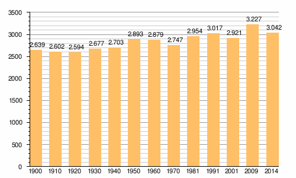

Oia esta na franxa occidental do concello dá ao mar. O relevo está marcado polas estribacións en dirección N-S da Serra da Groba, que chegan até os 600 metros de altitude e dos que parten vales estreitos que descenden até a ribeira, constituída por unha rasa litoral extensa. Aquí é onde se localizan os núcleos de poboación (Oia, Viladesuso, Mougás) e as escasas terras de cultivo. Noutro val paralelo á costa, entre os montes de Lousado e Corrubelo, sitúanse Loureza e Burgueira, parroquias nas que se cultiva aproveitando os socalcos. Ao sur atópase o val do Rosal.
Segundo o IGE, no 2014 tiña unha poboación de 6.455 habitantes.

| Oia | A Guardia | O Rosal |